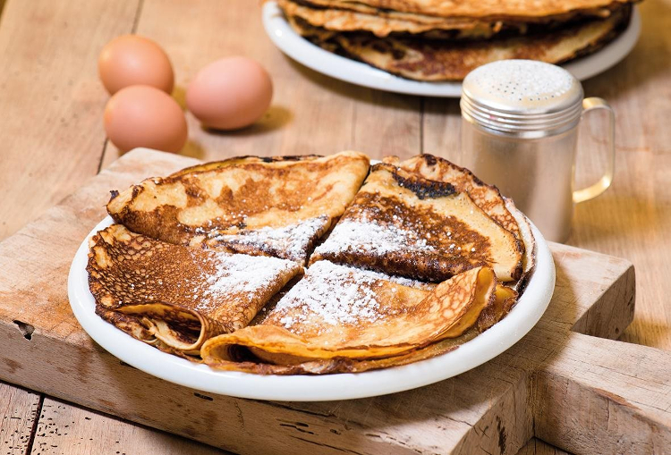
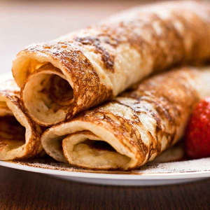
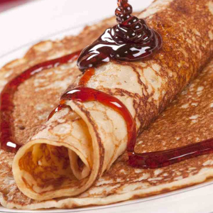
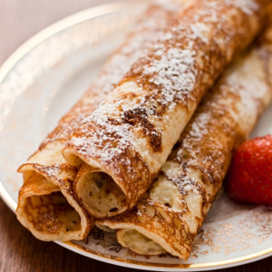
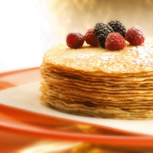

Pannenkoeken
Recept
Veel mensen denken dat pannenkoeken alleen lekker zijn met stroop of met poedersuiker. Deze mensen zitten er helemaal naast. Er zijn ontzettend veel lekkere recepten met pannenkoeken te bereiden. Je moet dit alleen even uitproberen.Ingredienten
- 200 gr bloem
- 2 eieren
- 500 ml melk
- Snufje zout
- 50 gr boter
Bereidingswijze
Doe de bloem en het zout in een beslagkom. Maak een kuiltje in het midden en voeg de eieren en een beetje melk toe. Meng dit met een mixer tot een egaal beslag. Schenk nu de rest van de melk er bij en mix nog een minuutje door. Verhit een flinke klont boter in een koekenpan en schenk een beetje van het beslag in de pan. Houd de pan scheef zodat het beslag mooi uitvloeit en de gehele bodem bedekt. Bak de pannenkoek aan beide kanten licht bruin. Houd de pannenkoeken warm onder een bord of aluminiumfolie totdat ze allemaal gebakken zijnbron




